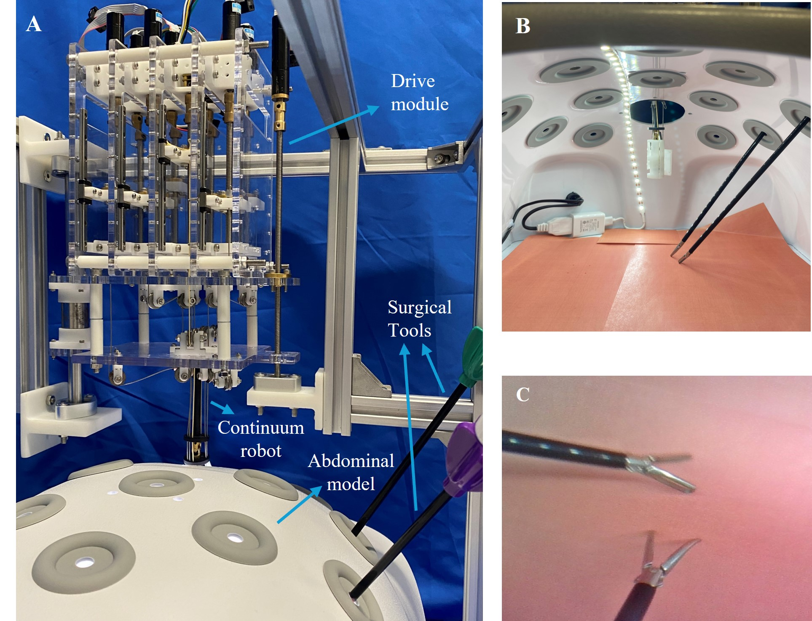

From surgical robotics to fluid power and cardiovascular engineering.

Sun Yat-Sen University
RESEARCH DIRECTION 01
Continuum Laparoscopic Robot: Design, Modeling, and Control
We develop continuum laparoscopic robots that make surgical viewing more flexible and intuitive. Mechanical design decouples orientation and zoom, while gaze attention and surgical-tool tracking guide automatic field-of-view adjustment. Teleoperation and feedback control connect surgeon intent with robot motion.
MRI-Compatible Pneumatic Motor: Design, Modeling, and Control
We build MRI-compatible pneumatic actuators for robots operating inside magnetic imaging environments. Modular motion outputs and encoders support precise movement, while modeling and control address the dynamics introduced by long air tubes. Our goal is reliable position, velocity, and torque control for image-guided intervention.
Eye Gaze Estimation: Algorithm Design and Applications
We study how eye movements can become a natural interface for robotic systems. Our work combines eye detection, gaze estimation, and visual attention with applications in needle deployment, laparoscopic viewing, and helmet aiming. The aim is to translate where a person looks into useful robotic assistance.
We design compact parallel mechanisms for image-guided intervention and robotic endoscopy. Analytical kinematics and learning-based models address the challenges of coupled motion and multiple forward-kinematic solutions. Visual feedback supports precise positioning and automated surgical viewing.
Trajectory Planning: Optimizing Energy Consumption and Completion Time in UAV-Assisted IoT Networks
We optimize how UAVs move and collect data in Internet-of-Things networks. Trajectory planning balances aircraft energy, sensing-device energy, and mission completion time while respecting communication requirements. Simulations compare flight paths and the tradeoffs between speed and efficiency.
Pneumatic Actuator, Miniature Hydraulic Power Unit, and Soft Robotics
We explore fluid-powered actuation for compliant robots that interact with people and their environment. Pneumatic mechanisms provide motion, and miniature hydraulic sources deliver compact power for soft robotic systems. This work connects actuator design, prototype fabrication, and experimental evaluation.
Hemocompatibility Study of A Centrifugal Cardiac Assist System and An Axial Microcatheter Support System
We investigate how mechanical circulatory support devices affect blood. In-vitro circulation loops enable comparisons of device hemocompatibility, including hemolysis and shear-related effects. This work evaluates cardiac-assist technologies and informs the design of safer blood-contacting systems.
Vanderbilt University · University of Arizona · Stony Brook University
RESEARCH DIRECTION 08
Hemocompatibility Study of In-vitro Circulatory Loop Components
We examine how the test loop itself can influence measurements of blood damage. Connectors, bends, and loop geometry can introduce shear-related artifacts that complicate device comparisons. Experiments and computational models help distinguish device effects from those introduced by the testing system.
Design of Novel MCS Devices and Hemocompatibility Tests
We design mechanical circulatory support devices with alternative blood-propulsion mechanisms. Valveless pulsatile and peristaltic concepts seek to restore useful flow while addressing the limitations of conventional pumps. Modeling, prototyping, and hemocompatibility evaluation guide development.
Modeling of Interaction between Circulatory Support Device and Cardiovascular System
We model the interaction between circulatory support devices and the cardiovascular system. Bond-graph models connect device behavior with pressure, flow, and cardiac dynamics. These models support device sizing, control design, and evaluation alongside physical mock-circulation systems.
A Novel Alternating Flow Variable Displacement Hydraulic Pump
We develop alternating-flow hydraulic pumps that vary displacement while targeting efficient operation across a wide operating range. First-principles models connect the mechanical design to dynamic behavior. Prototype experiments provide a basis for validating models and evaluating performance.